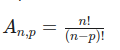
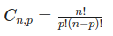
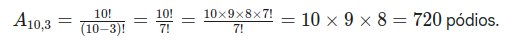

É a base de tudo. Se você tem Etapa 1 (com x opções) E Etapa 2 (com y opções), o total de possibilidades é x×y.
- Exemplo: Quantos "looks" posso montar com 3 calças e 4 camisas?
- Etapa 1 (Escolher calça): 3 opções
- Etapa 2 (Escolher camisa): 4 opções
- Total: 3×4=12 looks.
Aqui é onde a maioria dos candidatos se confunde. A diferença principal entre eles é se a ordem importa ou não.
- Permutação (P)
- Palavra-chave: Anagramas, filas, "de quantas formas podem se sentar".
- A ordem importa? Sim.
- Usa todos os elementos? Sim.
- Exemplo: Quantos anagramas (diferentes "palavras", com ou sem sentido) podemos formar com a palavra ROMA?
- Temos 4 elementos (R, O, M, A) para usar em 4 posições.
- Pn=n! (onde n é o número de elementos)
- P4=4!=4×3×2×1=24 anagramas.
- (Variação): Se houver elementos repetidos (ex: ARARA), usamos a Permutação com Repetição.
- Arranjo (A)
- Palavra-chave: Senhas, pódios (1º, 2º, 3º lugar), eleição com cargos diferentes (Presidente, Vice).
- A ordem importa? Sim.
- Usa todos os elementos? Não (forma subgrupos).
- Exemplo: Em uma corrida com 10 atletas, de quantas formas o pódio (1º, 2º e 3º) pode ser formado?
- Temos 10 pessoas (n=10) para escolher 3 (p=3).
- A ordem importa (ser 1º é diferente de ser 3º).
- Fórmula: 

- Combinação (C)
- Palavra-chave: Comissões, equipes, "grupos", "times".
- A ordem importa? Não.
- Usa todos os elementos? Não (forma subgrupos).
Exemplo: Com um grupo de 10 pessoas, quantas comissões de 3 pessoas podemos formar?- Temos 10 pessoas (n=10) para escolher 3 (p=3).
- A ordem NÃO importa (Comissão "Ana, Beto, Carla" é a mesma que "Beto, Carla, Ana").
- Fórmula: 
- 
Usamos a permutação quando queremos reorganizar a ordem de TODOS os elementos de um conjunto.
Usamos o arranjo quando vamos formar subgrupos (pegar p elementos de um total de n) e a ordem desses elementos importa.
Usamos a combinação quando vamos formar